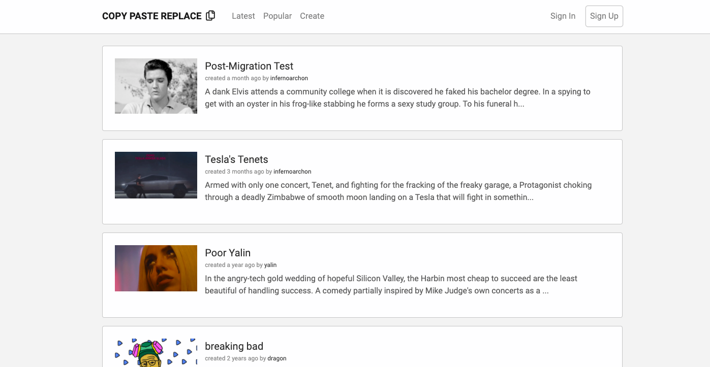

Copy Paste Replace
A word replacing application that takes in custom excerpts and replaces keywords with user inputs to create funny and original stories.
Created the front end of a tool that replicates Madlibs with custom texts and outputs related animated images
Random Walk Down Wall St.
A python tool that displays analysis and comparisons of stocks that users select. The site is accompanied by demos and detailed info on market sectors.
Developed a full-stack web application that displays analysis and comparisons of stocks that users selects.
Collected datasets for the Python tool that projects correlation between different stocks.